01 / ONI BREATH
Дыхание маски
Тихое фирменное движение, ближе всего к существующему фону ожидания
DOJO / КОМПЬЮТЕРНЫЙ КЛУБ

ПОДГОТОВКА
Подключаемся к клубу
Игры и программы появятся после подготовки